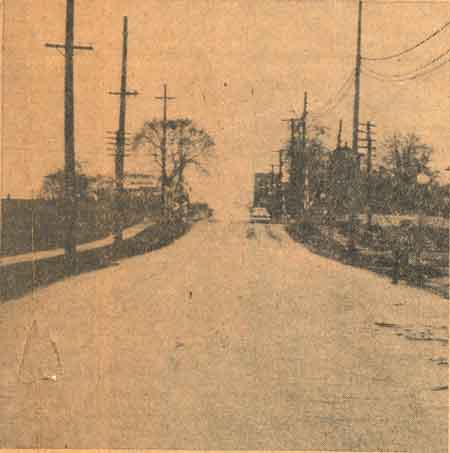
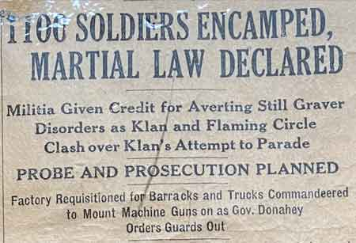
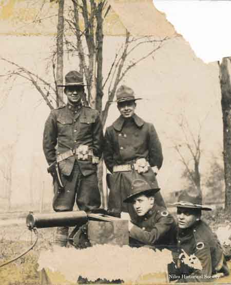

Ward-Thomas Museum


1924
Riots
“They Shall Not Pass”
Part 2
Ward — Thomas
Museum
Home of the Niles Historical Society
503 Brown Street Niles, Ohio 44446
Click here to become a Niles Historical Society Member or to renew your membership
Click on any photograph to view a larger image, click on image again to zoom into photograph.
| They
Shall Not Pass Part II: 100 Years Ago…. Frank McDermott Shooting. During the early hours of November 1, 1924, Frank McDermott, Dude Murphy and Leo ‘Shine’Jennings noticed a crowd had formed in front of Rummell’s Pool Hall. Upon approaching, they began shooting at a car that was pulling up in front of the hall. McDermott ran to the auto and jumped on the running board. Frank McDermott was shot twice by Klansman when he leaped onto the running board of the fleeing car; once in the shoulder and the second bullet grazed his scalp. He was stunned by the gunfire and lost his grip and fell to the pavement. The crowd continued to shoot at the fleeing car. Brothers, Rex and Willard Dunn were in the car. Niles police later arrested both of them. Rex Dunn would later be charged with intent to kill. |
||
| |
||
| Knights
of the Flaming Circle Plan for November 1st, 1924 Parade |
||
| |
||
|
Both Factions Meet Saturday. Clyde Osborne, Law Director
of Youngstown and Grand Dragon of the KKK in Ohio, would not
cancel the procession and Mayor Kistler refuses to revoke their
permit to march. |
At the Konklave. |
Map shows two intersections where the KKK was stopped, searched and turned back. East Federal Street and Vienna Avenue. Robbins and Linden Avenues. Cars were searched and weapons confiscated and Klan robes torn up. Klan marchers were prevented from proceeding to encampment on North Road. |
| |
||
The GE Plant was located at the corner of East Federal and North Main Streets. The B&O and Erie railroad tracks are visible in the bottom right of the view. |
This view of Robbins Avenue, Linden Avenue and Erie Street shows Mt. Carmel Church and the Erie Railroad station which were two essential positions that were used to effectively prevent Klan members from assembling for the downtown parade on Main Street either by auto or a special passenger train car. |
In 1924 there was no underpass but
rather |
| |
||
|
Map shows the main entrances for the anti-Klan forces to stop the Klanners preparing to parade in downtown Niles. |
Knights of Flaming Circle Mobilize Forces. By 8:00 a.m. on November 1st, the Knights of the Flaming Circle mobilize forces to go to the different areas of the city. X marks the intersection of East Federal Street and Main Street. A large group of anti-Klan men were staged in the empty lot across from the GE plant. The railroad tracks provided a 'choke point' which caused cars traveling North Main Street toward Niles to slow down due to the hill the tracks were built. Y indicates the Old Iron Bridge that crossed the Mahoning River which provided access to Niles from the south along Route 46. Z marks the area where Erie trains would stop and drop off passengers. There were also stopping points at Mt. Carmel Church on Robbins Avenue and Vienna Avenue at East Federal Street. Many members were called in to help from Pittsburgh, Cleveland , and Steubenville. They searched the KKK’s vehicles, disarmed them and forced them out of the city. By noon, the Flaming Circle were at the intersection of Federal Street and Main street. The Klan’s vantage point was one mile from the location of the Klan on Niles Warren Road. |
|
| |
||
The main confrontation between the two forces took place in the afternoon at the Railroad crossing and G.E. Plant at the intersection of East Federal Street and North Main Street. PO1.526 |
Several times Klan vehicles attempted to cross the intersection and proceed to the downtown area where the parade was scedules to take place. Armed Klan members approached this area with guns firing only to be turned back with anti-Klan forces returning fire with pistols and rifles. In 1924 the Erie and B&O railroad crossing was an inclined roadway which aided the anti-klan forces in preventing the Klan autos from proceeding to the downtown area. The two new underpasses were built in 1953. |
 |
| |
||
| Sheriff
on the scene. Sheriff John E. Thomas was in Niles since early in the day, and with him all his available deputies. But the number is small as Thomas found it practically impossible to find persons willing to serve as special deputies. At Warren, members of the headquarters unit of the National Guard mobilized in uniform before noon, though no order had been received for them to do so. Local guard officials called the men to be ready for an emergency summons from Niles, they said. |
||
| |
||
Women of the Klan served coffee, sandwiches and pie to the thousands of Klansmen who gathered in a field on the outskirts of Niles. |
The Knights of the Flaming Circle also had outsiders join their cause. The women on the Italian side carried guns in their aprons to the East End so the men could be armed. |
|
| |
||
| Sunday
Morning Nov 2, 1924 12 are hurt in day of hot
clashes between Ku Klux and Enemies. |
||
| |
||
| The injunction suit brought by Attorney Nate Kaufman to restrain Police Chief Powell from sending Youngstown police to Niles was dismissed by Common Pleas Judges Gessner and Lyon, who said they had no authority to issue such an order. Powell, however says he does not intend to send men to Niles. Badge presented to Chief Keogan Powell of Youngstown, Ohio in recognition of his excellent services as the head of the local police department. May 6, 1924. |
|
|
| |
||
First
Clash Before noon. After considerable difficulty, they succeeded in dispersing the forces, but one look at the expressions on the faces of men in the groups was enough for Conelly. He put in a call for the Governor’s office immediately and the (preparation for the) mobilization of troops followed. Colonel Conelly then took off his civilian clothes and donned his uniform. Martial law was declared. Would the troops arrive before a pitched battle took place? Shortly afternoon, an automobile sped past the stronghold of the Flaming Circle, the occupants of the car firing repeatedly into the crowd. Three men fell wounded. The next automobile that passed was stopped by the infuriated Circlers and found to be full of rifles and revolvers. These were seized and passed around. |
||
|
Sheriff Thomas pleading for a truce and the firing begins a few minutes later. The railroad police had orders to protect only railroad property. |
Skirmishes that started last night and resulted in shooting of one youth were resumed this morning. Groups of anti-Klan factions patrolled the roads leading into Niles. Every automobile was stopped and searched. If any Klan robes or other regalia were found in the car, they were confiscated and the car was turned back. Fights broke out in a number of places but no blood was shed. The Flaming Circle, however, was able to prevent Klansmen from entering the town in automobiles. Klan robes were strung up on telephone poles for miles outside the city. Sheriff John E. Thomas was in charge of the situation, Mayor Harvey E. Kistler, having disappeared. Acting as advisors and observers, were Colonel Conelly and Captain William S. Voorsanger of Cleveland. Captain Voorsanger is commander of the Service Company of the 145th infantry. Sheriff Thomas had been able to get only a few men to serve as special deputies. His force and the local police, in charge of Chief L.J. Rounds, were kept busy every minute but couldn’t attempt to cover the city adequately. |
|
On Dangerous Territory. Shortly before the troops arrived, Sheriff Thomas, escorted by Captain Voorsanger, went to the Klan encampment where the sheriff read Governor Donahey’s proclamation of martial law and Captain Voorsanger announced the Colonel Conelly would not permit the Klan to parade. Captain Voorsanger estimated the number at the
Konklave at 30,000 including women. A barbecue had been prepared
and the assembled Klansmen presented a picturesque sight. Nearly
all were robed and some were masked. Crowd Boos Sheriff As the two were leaving, some men stepped up to Captain Voorsanger and said they would like to see sheriff Thomas alone in a tent. The sheriff went with them while Voorsanger chatted with officials of the organization. Finally he became alarmed at sheriff Thomas’ long absence. “I’ve never seen such a demonstration
in all my life,” said Captain Voorsanger afterward. “One
of the men told me they were going to get the sheriff’s
resignation and then kill him because they blamed him for the
trouble they had with their parade”. He told the men to produce the sheriff at once
unless they wanted to involve the hooded order in a massacre. The Klansmen had lined up in columns of four
and were preparing to march when the troops arrived. According
to witnesses, one leader in a red robe stepped out and called
for forty armed men. “And no yellow bellies, either,’
he said. Then another leader stepped out. It was said that Colonel Watkins told Sheriff Thomas, “that he had rescued him (Watkins) from an unruly mob at the Niles jail the previous night and now it was his turn to provide a safe exit from the Klan encampment to sheriff Thomas”. |
||
Part of the crowd of anti-klan sympathizers ready to prevent the klansmen from entering the city. This crowd, near the city limits(intersection of Federal and Main Streets) was dispersed by troops Men on railroad tracks watching the fighting occuring in adjoining fields. |
Niles
Riot Halted by Troops. Firing took place intermittently. Automobiles were constantly being stopped. Several fires started about town and yes a constant uproar from the sirens of the fire apparatus, the gongs of ambulances, and the roar of police motorcycles. About two automobiles passed the place where the largest force of Klan foes had gathered. A man fired an automatic rifle into the crowd. No one was hit, but Klan foes chased the automobile into the center of town. Dozens of men brandishing every known variety of shooting arm sprang up suddenly and closed in on the car, a dilapidated Ford. The automobile was stopped in the heart of the town in front of the Allison Hotel. Two men were dragged out, searched and taken back to the Flaming Circle stronghold. One was shot down and the other beaten into insensibility. Spectators who saw the vengeance wrecked on the pair were positive both had been killed and the report that two men had been lynched spread rapidly. Neither was dead, however. |
|
|
One of the men wounded in the clash of the Ku Klux Klansmen and Knights of the Flaming Circle is shown being placed in the Niles Police ambulance. |
Niles, O., Nov. 1-Under drastic military rule, Niles is comparatively quiet tonight after eighteen hours of rioting and bitter skirmishes between the Ku Klux Klan and foes of the hooded order in which at least twelve persons were wounded. The streets are patrolled by approximately 1,300 national guardsmen, practically the entire strength of the 145th infantry, from Cleveland, Akron, Canton, Berea, Warren and Youngstown. They have taken charge of the civil government under qualified martial law. The Knights of the Flaming Circle, sworn foes of the Klan, set out to prevent the Klan from parading through Niles. Preliminary skirmishes, which were gradually leading up to a pitched battle with both factions armed to the teeth, were halted just in time to prevent further bloodshed by the arrival of the troops. Of the dozen or more persons wounded or seriously beaten, six were taken to the Warren city hospital and two are not expected to live. The Klan held no parade, although 30,000 members of the order, including a number of women, had gathered at an encampment one mile north of the city. Opposing the Klansmen were about 500 members of the Flaming Circle who gathered in a field on Main Street near the outskirts of the city. This was a highly strategic position, for the Klansmen could not have entered the city without passing the stronghold of their enemies. |
|
Both
Sides Well Armed. The city was quiet this morning until about 11
this morning. Then for four hours there was no semblance of order. Colonel Connely, in temporary command of the troops, tonight issued a proclamation to the citizens of Niles, calling on them to observe the military regulations and warnings that all orders will be enforced without regard to race, class or creed. Colonel Connely also issued orders preventing any visitors from coming into Niles. Automobiles are being turned back or detoured around the city and no persons without legitimate business in the city is permitted to leave trains passing through Niles. Meanwhile, Mayor Kistler had appeared at City Hall. He promised Colonel Conelly he would try to persuade the Klansmen to abandon their parade, and was taken to the scene of the Klan encampment in a military automobile. Later, members of the Flaming Circle swooped sown on twenty-five men wearing white ribbons marked ‘Police’. These badges, military sources say, were given out by Mayor Kistler to Klansmen he appointed as deputies to preserve order. The procession of special police was surrounded and their guns and blackjacks taken away from them. Members of the Flaming Circle called the local police and the twenty-five were marched to the City Hall and placed under arrest. |
||
Youngstown
Telegraph Columbus, November 1-Immediately upon receipt
of the report that four men had been shot at Niles, Governor
Donnehey at 1:16 pm ordered a regiment of National Guard
mobilized at their armories. Col. L.S. Connelly, ranking officer of the Ohio National Guard in the Niles area, at 2:18 pm was informed of a proclamation issuing from Governor Donnehey that partial martial law is to be ordered in Niles. Shortly before the troops arrived, Sheriff Thomas, escorted by Captain Voorsanger, went to the Klan encampment where the sheriff read Governor Donahey’s proclamation of martial law and Captain Voorsanger announced the Colonel Conelly would not permit the Klan to parade. Captain Voorsanger estimated the number at the Konklave at 30,000 including women. |
||
|
Machine guns were ready as Youngstown |
Soldiers
Are Cheered At 3pm a brown military lorry packed with helmeted dough-boys drove into sight. The crowd melted away to make way for the lorry and a great cheer went up as the soldiers were recognized. For the Flaming Circle, the arrival of the military meant victory, for they knew the troops would prevent the Klan from parading. Nevertheless, they took care to conceal their weapons, but the lorry did not stop. It drew up in front of the city hall, relieving apprehensions of the non-combatants in the business section of the town who feared the only safe place would be a cyclone cellar if the Klan parade ever got started. A cordon was thrown about the city hall and guards with fixed bayonets were assigned to their posts. The company had come from Warren. Most of them in a few minutes were detailed to patrol various roads. |
|
|
Youngstown Machine Gun Company entering Niles. When Governor Donaheynordered out the militia, guardsmen took command of Cleveland, Akron, Warren and Youngstown busses and rushed to Niles at top speed. At 3:30 there was another shout as two busses packed with a machine gun company from Youngstown drove up to city hall. Original newspaper photograph of the machine gun busses entering Niles. |
Machine
Guns Are Ready. Since then fresh troops have arrived every half-hour until now practically the entire strength of the 145th Infantry is here. In the city hall is a pile of about sixty revolvers, blackjacks, and knives most of them taken from alleged Klansmen. About 100 persons were arrested. Tonight they were released and warned to keep out of Niles. The Klansmen were bundled in motor lorries in batches of about twenty-five and driven to the Klan encampment. Troops were stationed around the Klan encampment to see that the hooded knights dispersed. No attempt was made to take weapons away from the Klansmen who were not arrested because early in the evening there were not enough troops here to do the job, Colonel Conelly said. As yet, the troops have not attempted to arrest any of those responsible for today’s disorders, and the probabilities are that no such attempt will be made in view of the high feeling here. Colonel Conelly believes the first thing for the troops to do is restore the city to quiet as soon as possible. Martial law is being administered with every consideration for the residents, however. There are no clashes between civilians and soldiers as there were at Lorain while it is understood that a curfew law will be enforced at 9 tonight. Persons having legitimate business will not be molested, Colonel Conelly said. Orders have been issued to shoot to kill, however, if any such disturbances as occurred last night take place tonight. Little trouble is anticipated, as all factions are considerably relieved and comforted by the presence of the troops. |
|
|
Erie railroad station where the special train was prevented from unloading the klansmen. Shortly after the military forces assumed control,
a train containing fourteen coaches loaded with Klansmen and their
wives arrived. The train was said to have come from Kent. It was
sent back, no one permitted to get off. |
Klan
Train Stopped. The priest passed on the information to the Flaming Circle leaders who then summoned a crowd of anti–Klansmen to prevent any Klan members from leaving the train. Carmen DeChristofaro, who later would become Mayor of Niles, a six–foot 200-pound giant who played football for the Jennings Athletic Club, gathered at least fifty Knights of the Flaming Circle around the Erie Depot. They were armed with guns, knives, clubs and bricks. As the train pulled into the station, the head of the Klansmen, former army captain Jack Curley of Massilon, used to conditions of battle, made an instantaneous decision “It’s no place for us . We go right back.” The train was sent back, no one was permitted to get off. The Circlers had outmaneuvered the retreating Klan members. |
There were rumors that the Erie Railroad bridge over Mosquito Creek had been rigged with dynamite. This was done to prevent the special train with klansmen from arriving at the Erie Railroad grade crossing at the GE plant and outflanking the Flaming Circle crowd. Since the train was stopped at the Erie station, no dynamite was used on the bridge. |
Youngstown
Telegraph Major Connelly declared martial law at 2:45 pm in Niles
Colonel L.S. Connelly of Cleveland and General Benson W. Hough of the 135th Regiment, O.N.G. Columbus, were in charge of troops now enforcing military law at Niles. General Hough is United States District Attorney at Cincinnati. |
||
 |
The troops will be held at their respective armories pending orders to go to Niles. The troops mobilized are: 112th Engineers, Cleveland; all units of the 145th Infantry at Cleveland, Berea, Canton, Akron, Warren and Youngstown; 135th Field Artillery, three batteries at Canton and one at Youngstown; two troops of Calvary, one at Akron and one at Barberton. The units mobilized total approximately 1,100 men. Col. L.S. Connelly, ranking officer of the Ohio National Guard in the Niles area, at 2:18 pm was informed of a proclamation issuing from Governor Donnehey that partial martial law is to be ordered in Niles. |
|
| Ohio militiamen march through the streets of Niles in riot formation, lining up in the V-shaped formation, preparing to march down a street. |
 |
Ohio National Guard protecting the perimeter of the William McKinley Memorial grounds after martial law had been declared. |
Describes fights between Circlers and Klan. Reporter, in midst of fray, tells of three fusillades. I want to carry you back with me to a few hectic hours on Saturday afternoon. If the story assumes the aspect of prejudice, remember that it was gathered from inside the anti-Klan lines and that it takes form in the “front lines” of the factional fight. What happened in the Klan camp or at the center of the city, I do not know, but I do know that the press dispatches filed from the secure sectors of the comfortable hotel lobby of the city’s leading hostelry could not have been based on fact, nor could they have found their inception on other than grape-vine gossip that trekked up Main Street by word of mouth from one excited member to another. With the exception of my two confreres, newspapermen were notably conspicuous by their absence. Photographers early in the fray found the vicinity of Main and Federal anything but inviting and departed. Shortly before noon Saturday, I learned that the Knights of the Flaming Circle had taken up a point of vantage in a city park at the intersection of Main and Federal Streets. When I arrived there, I found armed men-armed with shotguns, rifles, pistols and strange blunt-barreled automatics patrolling the intersection. I directed the driver to take me to the Klan camp, which was located about one mile farther north on Niles-Warren Road. Here we were accosted by men wearing white ribbons-the insignia of the Klan deputies-and told to “about face”. We tried to argue that we were representatives of the press, but were denied entrance. Back at the intersection of Main and Federal, we dismounted and were immediately facing leveled rifles. The driver of the car advanced and told the leaders that we desired to join them and remain neutral. After a hurried consultation, the “courtesy of camp” was extended to us. I mingled freely with these men and talked with them. Perhaps one-fourth of them were foreigners; the rest were very ordinary and neighborly citizens. Singling out one man who is known over Niles as the leader of the Circlers, I called him over to a filling station at the corner and asked him what could be expected if the Klan attempted to go through with its parade. His reply was significant: “Not until they have killed those hundreds of our men. We’ll fight it out till the last man drops.” The First Battle. A hundred guns let go at once and for the next thirty-seconds firing was fast and furious. The Italian in the lead, his rifle empty, dropped to his knee to level a pistol. He crumpled and fell. Pandemonium reigned, women shrieked and fainted. Children scurried to cover and men dropped in their tracks. The driver of the truck, obviously realizing the futility of trying to force passage, whirled about and started back (to Klan encampment).The gunner stuck to his post for a time, then keeled over in the car. The disappearing car left in a rain of bullets. Then, as quickly as it had begun, the firing ceased. Now, when I look back, I can see yours truly scampering ungracefully for the rear, picking himself up again and again from a partial paralysis of flight. And I can see again dozens of Knights of the Flaming Circle also picking themselves up, gripping their arms, their legs, and other parts of their bodies. I helped three men wash the blood from their wounds at a backyard pump. The Second Fusillade The driver of the car halted, wheeled about, and also disappeared in a rain of lead. Twice the Knights of the Flaming Circle had repulsed the onslaughts of armed deputies, who, I was told, were hired to blaze a way for the Klan parade. But this time, when the smoke had cleared away, a little Italian woman lay still in the street-clutched in her hand a huge meat cleaver. She was carried into a nearby house and for an hour remained unconscious. “Me fight, too!” were her first words, upon coming to. Her head had been grazed by a bullet. After the excitement immediately subsequent to the second charge had subsided, Circlers bundled their wounded into autos and hurried them off. Where, no one would say. An emergency relief station in a garage on Federal Street, was ignored by the wounded. Though three nurses and a doctor were on hand to care for the casualties, none asked for treatment. In the next 15 minutes, the Knights of the Flaming Circle, passion flaming in their eyes, murder in their every move, recharged their weapons and presented arms northward. Senator John McDermott, whose son had fallen in a street fight the night before, faced the Circlers with hands upraised pleaded with them to come with him into the near-by park to hear a proposal for a 20-minute truce, suggested by Sheriff John Thomas. Leading the way to the center of the city park, McDermott prepared to speak. Again the hum of a speeding car was heard, and again shots were fired by the Circlers. But now the street was clear and the car speeded by, the driver and one other man, each wearing white ribbons, firing to the right and left. Again, the Circlers met the attack with a fusillade, but failed to register a hit. Riddled with Bullets. I saw these two men thrown out on to the ground and literally riddled with bullets. If there was one shot, there were 50, and the shooting did not cease until they lay still on the ground. One or two of the crowd approached, kicked the bodies, and fell back. A lull fell over the mob. Someone shouted: “Get those damned stiffs out of here before the troops get here!” One body was bundled into a nearby car and taken eastward on Federal Street. The other body was pulled up to the street and left lying there. Niles police arrived in a patrol, but turned their attention to regulating traffic. Where the second body was taken, or by whom, I could not see. Cheers greeted the arrival of the troops in a motor truck. “We have won!” cried the Circlers, for they knew that the coming of the soldiers meant the abandonment of the parade. Guns were hustled to cover and anti-Klansmen began to struggle off, some limping, some carrying their arms in improvised slings, and some bearing wounds on their faces. Can’t Count Casualties. |
||
|
|
||
|
GE baseball field on East Federal Street across from gas station which served as a temporary medical clinic for the anti-klansmen who had been injured. |
||
Youngstown
Telegraph November 1, 1924 The streets are patrolled by approximately 1,300 National Guardsmen, practically the entire strength of the 145th Infantry, from Cleveland, Akron, Canton, Berea, Warren and Youngstown. They have taken charge of the civil government under qualified martial law. Colonel Connely, in temporary command of the troops, tonight issued a proclamation to the citizens of Niles, calling on them to observe the military regulations and warnings that all orders will be enforced without regard to race, class or creed. Colonel Connely also issued orders preventing any visitors from coming into Niles. Automobiles are being turned back or detoured around the city and no persons without legitimate business in the city Meanwhile, Mayor Kistler had appeared at City Hall. He promised Colonel Connelly he would try to persuade the Klansmen to abandon their parade, and was taken to the scene of the Klan encampment in a military automobile. |
||
Observations
of the November 1, 1924 Riot
“Take it off, we know you”. Warren Tribune April 10, 1925 |
||
| Links to Oral History Interviews: |
||
| Youngstown
State University Nicola Criscione May 8, 1984 C: What we saw was a lot of cars tipped over. Well, first of all there was a lot of Klansmen, not a lot of them, a few of the cars had Klansmen in them with sheets and hoods over their heads, and some of them had shotguns. J: Some of the Klansmen had shotguns? J: So there were some Klansmen also who were
walking to this parade, or this attempted parade? J: What would happen to a car with a Klansman
who was coming into Niles over Robbins Avenue? J: Do you know why the Klan was trying to march
in Niles? Niles was the place that they had the most trouble in, and I suppose they were trying to break that up in there so that they could parade, you know. They would get their permits and then they would have the police protect them. Like us, we would have to be on the run all the time. C: In terms of the Klan becoming a big thing locally, obviously it elected the mayor that it endorsed. It elected six out of seven councilmen and people in other cities as well. It had judges and had prosectuing attorneys J: Why do you think it became so big here? People often think of the Klan as a southern organization. How come it became so big, particularly when there were so many immigrants around here at the time? C: You know when you went for a job, if you were Italian or a foreigner or something, if you weren't a Welshman or something like that, you were a laborer. When I started on the railroad the labor paid ten cents an hour. You worked ten and twelve hours a day. That was way back in 1916, 1917, 1918, and 1919. |
C:
The reason the Klan broke up is because
they stole that roster, the Klan roster. Somebody put some sheets
out. Actual cover of booklet that published names of Klan members that was circulated in Trumbull and Mahoning Counties. “There is just one thing a member of the Ku Klux Klan dreads—the bright white light of publicity.” Quote from publication above. |
Booklet that introduced the Klan public story.
Page from "The Truth About the Niles Riot, November 1, 1924" where the Klan published their viewpoint of the events of the riot. “Sheriff admits his inability to cope with the situation–Streets paraded by armed hoodlums, who shot and beat up American citizens.”
There are thirty-one pages in this booklet defending the Klan’s activities and placing the blame on the “foreigners” for the riot. |
Coming —Part 3: The Aftermath. Partial or qualified martial law is enforced. |
Coming —Part 4: Results of the Conflict. Investigation and judgments. |
|
|
|
||


{kind=link}
{kind=link}
{kind=link}
{kind=link}
{kind=link}
{kind=link}
{kind=link}
{kind=link}
{kind=link}
{kind=link}
{kind=link}
{kind=link}
{kind=link}
{kind=link}
{kind=link}
{kind=link}
{kind=link}
{kind=link}
{kind=link}
{kind=link}
{kind=link}
{kind=link}
{kind=link}